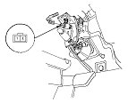
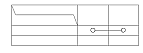
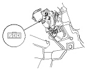
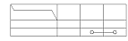

Clutch Pedal Position Switch Test
Clutch Pedal Position Switch A
Disconnect the clutch pedal position switch A 2P connector.
Remove the clutch pedal position switch A.

Check for continuity between the terminals according to the table.
If the continuity is not as specified, replace the clutch pedal position switch A.
If OK, install clutch pedal position switch A and adjust the pedal height.

Clutch Pedal Position Switch B
Disconnect the clutch pedal position switch B 3P connector.
Remove the clutch pedal position switch B.

Check for continuity between the terminals according to the table.
If the continuity is not as specified, replace the clutch pedal position switch B.
If OK, install clutch pedal position switch B and adjust the pedal height.
